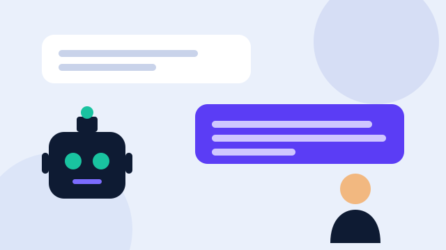
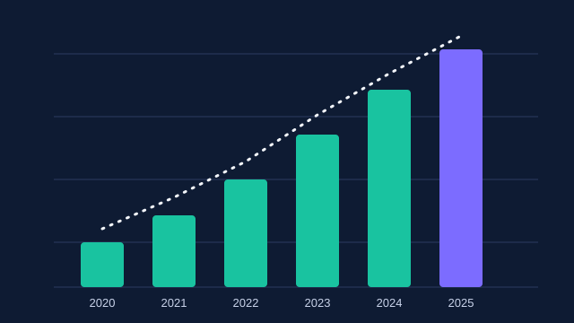

Apa itu AI?
Kecerdasan buatan (artificial intelligence, AI) adalah cabang ilmu komputer yang membuat sistem mampu melakukan pekerjaan yang biasanya membutuhkan kecerdasan manusia, seperti mengenali gambar dan suara, memahami bahasa, mengambil keputusan, dan belajar dari pengalaman. Tidak ada satu definisi tunggal yang disepakati semua ahli, karena batas antara "program biasa" dan "program cerdas" terus bergeser seiring kemajuan teknologi.
Perbedaan paling mudah dipahami ada pada cara program dibuat. Program biasa berisi aturan yang ditulis manusia langkah demi langkah: jika A maka lakukan B. Pada AI modern, terutama machine learning, manusia tidak menulis semua aturan. Program diberi banyak contoh, lalu ia menemukan sendiri pola yang menghubungkan masukan dengan keluaran. Filter spam pada email adalah contohnya: ia belajar dari ribuan email yang sudah ditandai spam atau bukan, lalu menggunakan pola itu untuk email baru.
AI sudah ada di sekitar kita bahkan sebelum kita menyadarinya: rekomendasi video, terjemahan otomatis, pembuka kunci ponsel dengan wajah, navigasi peta yang memperkirakan kemacetan, dan asisten percakapan. Karena itu memahami dasar-dasarnya bukan lagi urusan para ahli saja.

Sejarah singkat AI
Sejarah AI bukan garis lurus yang selalu naik. Ada masa penuh optimisme, ada pula masa kekecewaan. Pilih tahun di bawah ini untuk membaca peristiwa pentingnya.
Pola yang berulang dalam sejarah ini jelas: kemajuan besar terjadi ketika tiga hal bertemu, yaitu algoritma yang baik, data yang melimpah, dan tenaga komputasi yang murah. Gagasan jaringan saraf sebenarnya sudah ada sejak 1950-an, tetapi baru benar-benar berhasil pada 2010-an ketika data internet dan prosesor grafis (GPU) tersedia dalam jumlah besar.
Bagaimana AI bekerja?
1. Data
Semua dimulai dari data: teks, gambar, suara, atau angka. Kualitas data sangat menentukan. Jika data latih berisi bias atau kesalahan, model akan mewarisinya. Karena itu ada ungkapan terkenal di dunia komputer, garbage in, garbage out.
2. Model dan pelatihan
Model adalah rumus matematika besar dengan banyak angka yang disebut parameter. Saat pelatihan, model membuat tebakan, dibandingkan dengan jawaban benar, lalu parameternya diubah sedikit agar tebakan berikutnya lebih tepat. Proses ini diulang jutaan kali. Jaringan saraf tiruan tersusun dari lapisan "neuron" buatan yang saling terhubung, seperti pada Gambar 2, dan terinspirasi secara longgar dari otak, bukan tiruan persis otak.
3. Inferensi
Setelah dilatih, model dipakai untuk menjawab masukan baru. Tahap ini disebut inferensi. Saat kamu mengetik pertanyaan ke asisten AI, yang terjadi adalah inferensi.
Bagaimana model bahasa menjawab?
Model bahasa besar (large language model, LLM) pada dasarnya dilatih untuk memprediksi potongan teks berikutnya (disebut token) berdasarkan teks sebelumnya. Dengan data dan ukuran yang sangat besar, kemampuan ini menghasilkan jawaban yang tampak memahami konteks. Arsitektur Transformer, dengan mekanisme attention, membuat model dapat menimbang kata mana yang paling relevan satu sama lain dalam sebuah kalimat. Penting diingat: model dapat terdengar yakin padahal salah. Fenomena ini disebut halusinasi, sehingga jawaban penting perlu diperiksa ke sumber terpercaya.
Jenis-jenis AI
Berdasarkan kemampuan
AI sempit (narrow AI) mengerjakan satu jenis tugas dengan baik, misalnya mengenali wajah atau menerjemahkan. Semua AI yang kita pakai hari ini termasuk jenis ini, termasuk asisten percakapan, walaupun cakupan tugasnya sangat luas. AI umum (AGI) adalah gagasan sistem yang mampu mengerjakan hampir semua tugas intelektual manusia. AGI masih menjadi topik perdebatan dan belum ada kesepakatan apakah atau kapan akan tercapai.
Berdasarkan cara belajar
Supervised learning belajar dari contoh berlabel (misalnya foto kucing dan anjing yang sudah diberi nama). Unsupervised learning mencari pola dari data tanpa label, seperti mengelompokkan pelanggan. Reinforcement learning belajar lewat percobaan dan hadiah, seperti AlphaGo yang berlatih dengan bermain melawan dirinya sendiri.
Berdasarkan keluaran
AI prediktif memperkirakan sesuatu, misalnya cuaca atau risiko kredit. AI generatif membuat konten baru: teks, gambar, kode, atau suara. Agen AI tidak hanya menjawab tetapi menjalankan serangkaian langkah untuk mencapai tujuan, misalnya mengoperasikan aplikasi atau menulis dan menguji kode.
Data terbaru: apa kata AI Index 2026?
Salah satu rujukan paling sering dipakai untuk melihat kondisi AI adalah laporan tahunan AI Index dari Stanford Institute for Human-Centered AI (HAI). Edisi 2026 terbit pada 13 April 2026 dan merupakan edisi kesembilan. Berikut temuan yang dilaporkan beberapa sumber yang meringkas laporan tersebut.

Temuan lain yang menarik: pada tolok ukur pemrograman SWE-bench Verified, skor naik dari sekitar 60% menjadi hampir 100% dalam setahun. Kinerja agen AI pada tes OSWorld naik dari sekitar 12% menjadi sekitar 66%. Kesenjangan kinerja model terbaik Amerika Serikat dan China disebut praktis telah tertutup, dengan selisih sekitar 2,7% per Maret 2026. Kapasitas daya pusat data AI dilaporkan mencapai 29,6 GW. Studi yang dirangkum laporan menunjukkan peningkatan produktivitas sekitar 14–26% pada layanan pelanggan dan pengembangan perangkat lunak.
Namun laporan yang sama juga mencatat sisi yang kurang nyaman. Pelaporan uji keselamatan dan tanggung jawab (responsible AI) masih tidak merata dibanding pelaporan kemampuan. Kemampuan AI juga "bergerigi": model bisa hebat dalam tugas rumit tetapi keliru pada tugas sederhana seperti membaca jam analog. Selain itu, ada jurang pandangan: sekitar 73% pakar optimistis tentang dampak AI pada pekerjaan mereka, sedangkan hanya sekitar 23% masyarakat umum yang sama optimistisnya.
Catatan metode: angka di atas kami ambil dari ringkasan resmi Stanford HAI dan liputan pihak ketiga yang mengutip laporan itu. Untuk kutipan formal, rujuk langsung laporan lengkap di situs Stanford HAI (lihat Sumber).
Manfaat dan risiko
Manfaat
Kesehatan: AI membantu membaca citra medis, mempercepat riset obat, dan menyaring data pasien, meskipun keputusan akhir tetap berada di tangan tenaga medis. Pendidikan: pembelajaran dapat disesuaikan dengan kecepatan tiap siswa, dan siswa dapat bertanya kapan saja. Produktivitas: pekerjaan berulang seperti merangkum dokumen, menerjemahkan, dan menulis kode dasar dapat dipercepat. Aksesibilitas: pengenal suara dan pembaca layar membantu penyandang disabilitas. Sains: AI dipakai untuk menganalisis data besar dalam iklim, biologi, dan astronomi.
Risiko
Informasi palsu: AI generatif memudahkan pembuatan teks, gambar, dan suara palsu (deepfake) yang meyakinkan. Bias: model mewarisi bias dari data latih sehingga bisa memperlakukan kelompok tertentu secara tidak adil. Privasi: data pribadi yang dimasukkan ke layanan AI dapat disimpan atau disalahgunakan. Pekerjaan: beberapa tugas dapat otomatis sehingga pekerja perlu belajar keterampilan baru. Lingkungan: pusat data membutuhkan listrik dan air dalam jumlah besar. Ketergantungan: terlalu bergantung pada AI dapat melemahkan kemampuan berpikir dan menulis sendiri.
Etika dan aturan main
Karena dampaknya luas, banyak pihak menyusun prinsip penggunaan AI. Beberapa prinsip yang sering muncul adalah keadilan (tidak diskriminatif), transparansi (orang tahu kapan berinteraksi dengan AI), akuntabilitas (ada pihak yang bertanggung jawab), privasi, serta keamanan (sistem tidak membahayakan). Banyak negara kini menyusun regulasi, dan menurut AI Index 2026, strategi AI nasional makin banyak ditempuh negara berkembang.
Untuk pelajar, etika berarti jujur. Memakai AI untuk memahami materi, mencari ide, atau memeriksa tata bahasa adalah wajar. Menyerahkan hasil AI sebagai karya sendiri tanpa menyebutkannya adalah ketidakjujuran akademik, dan aturan tiap sekolah dapat berbeda. Selalu cek ketentuan dari gurumu.
AI di Indonesia
Indonesia memiliki Strategi Nasional Kecerdasan Artifisial 2020–2045 yang menjadi arah pengembangan AI nasional, dengan bidang prioritas seperti kesehatan, reformasi birokrasi, pendidikan dan riset, ketahanan pangan, serta mobilitas dan kota pintar. Selain itu, bahasa Indonesia dan bahasa daerah termasuk "bahasa dengan sumber data terbatas" dibanding bahasa Inggris, sehingga pengembangan data dan model lokal menjadi penting agar AI memahami konteks budaya kita. Detail kebijakan terbaru sebaiknya dicek langsung pada situs resmi kementerian dan BRIN karena dapat berubah.
Cara memakai AI dengan bijak
Periksa fakta. Anggap jawaban AI sebagai draf, bukan kebenaran final. Cocokkan angka dan nama dengan sumber resmi. Jaga data pribadi. Jangan memasukkan kata sandi, nomor identitas, atau data orang lain. Tulis perintah yang jelas. Sebutkan tujuan, konteks, dan bentuk jawaban yang diinginkan. Pahami, jangan hanya menyalin. Minta AI menjelaskan, lalu ceritakan ulang dengan kata-katamu. Sebutkan pemakaian AI bila tugas atau pekerjaan menuntutnya.
Tanya jawab
Apakah AI akan menggantikan semua pekerjaan manusia?
Tidak ada yang dapat memastikan. Laporan AI Index 2026 menyebut mulai ada bukti pergeseran tenaga kerja akibat AI, tetapi juga peningkatan produktivitas. Yang realistis, banyak pekerjaan berubah isi tugasnya sehingga keterampilan beradaptasi menjadi penting.
Apakah AI punya perasaan atau kesadaran?
Tidak ada bukti ilmiah yang disepakati bahwa AI saat ini memiliki perasaan atau kesadaran. Ia memproses pola data dan dapat menirukan gaya bicara yang tampak emosional.
Apa bedanya AI, machine learning, dan deep learning?
AI adalah payung terluas. Machine learning adalah bagian AI yang belajar dari data. Deep learning adalah bagian machine learning yang memakai jaringan saraf berlapis banyak.
Dari mana belajar AI untuk pemula?
Mulai dari dasar logika dan Python, lalu matematika dasar (aljabar, peluang), kemudian coba kursus pengantar machine learning dan latihan proyek kecil seperti pengklasifikasi gambar sederhana.
Uji pemahamanmu
Sumber
- Stanford HAI. "Inside the AI Index: 12 Takeaways from the 2026 Report", 13 April 2026. hai.stanford.edu/news/inside-the-ai-index-12-takeaways-from-the-2026-report
- Stanford HAI. The 2026 AI Index Report. hai.stanford.edu/ai-index/2026-ai-index-report
- Burges Salmon. "AI in 2026 – What Does Stanford's AI Index Tell Us?" (ringkasan temuan laporan).
- Digit. "Stanford AI Index 2026 report: 5 key insights on AI adoption and competency" (angka OSWorld dan produktivitas).
- Turing, A. M. (1950). "Computing Machinery and Intelligence". Mind, 59(236).
- McCarthy, J., Minsky, M., Rochester, N., Shannon, C. (1955). A Proposal for the Dartmouth Summer Research Project on Artificial Intelligence.
- Vaswani, A. dkk. (2017). "Attention Is All You Need". arXiv:1706.03762.
- Krizhevsky, A., Sutskever, I., Hinton, G. (2012). "ImageNet Classification with Deep Convolutional Neural Networks".
- Silver, D. dkk. (2016). "Mastering the game of Go with deep neural networks and tree search". Nature, 529.
Semua gambar dalam blog ini adalah ilustrasi orisinal buatan kelompok (format SVG di folder assets). Sebelum dikumpulkan, periksa kembali angka dan tahun terhadap sumber asli dan sesuaikan dengan format sitasi yang diminta gurumu.
Tentang kelompok kami
Kami adalah Kelompok Mister X, lima anggota yang menyusun blog ini bersama-sama.